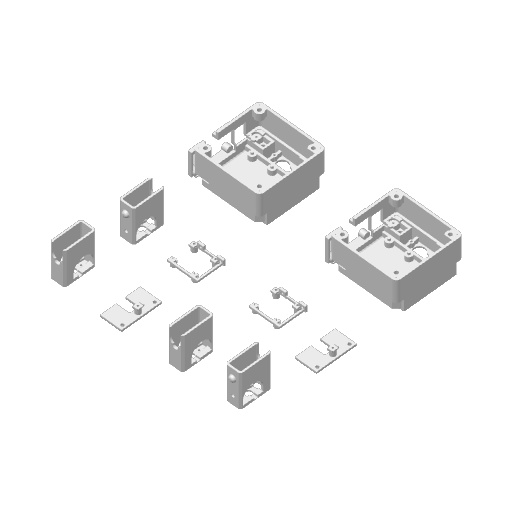
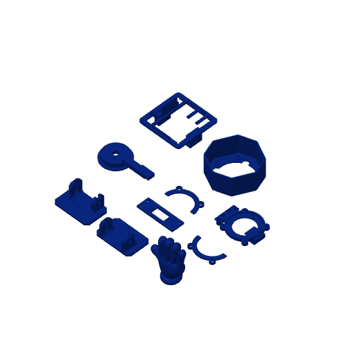
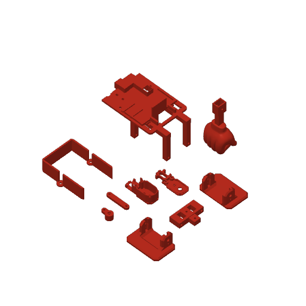

蓝色2台＋红色2台｜7个盘次｜80件
| 打印文件 | 颜色 | 材料 | 每盘件数 | 整盘次数 | 总件数 |
|---|---|---|---|---|---|
| 01_黑色_整盘打印1次.3mf | 黑色 | PLA | 20 | 1 | 20 |
| 02_白色_整盘打印2次.3mf | 白色 | PLA | 10 | 2 | 20 |
| 03_蓝色_整盘打印2次.3mf | 蓝色 | PLA | 10 | 2 | 20 |
| 04_红色_整盘打印2次.3mf | 红色 | PLA | 10 | 2 | 20 |
milk组桌面对战机器人｜打印委托单 日期：2026年10月31日 本次数量：蓝色巴掌机器人 2 台＋红色拳头机器人 2 台，共 4 台。 用途：11月12日下午北京拓竹门店活动。 一、打印数量（请按“整盘次数”打印，不要再按文件名中旧的“打印1件”重复添加模型） 黑色：01_黑色_整盘打印1次.3mf；每盘 20 件，整盘打印 1 次，共 20 件。 白色：02_白色_整盘打印2次.3mf；每盘 10 件，整盘打印 2 次，共 20 件。 蓝色：03_蓝色_整盘打印2次.3mf；每盘 10 件，整盘打印 2 次，共 20 件。 红色：04_红色_整盘打印2次.3mf；每盘 10 件，整盘打印 2 次，共 20 件。 合计：7 个盘次，80 件打印件（不含支撑、裙边等辅助材料）。 黑色盘已有左眼10只＋右眼10只；只打印一盘，供 4 台使用，其余 12 只作备用。 白色盘已有两台的身体组件。蓝色盘是一台巴掌机的脚板和攻击组件。红色盘是一台拳头机的脚板、攻击组件及减速箱上下壳。 3MF原文件名末尾的(1)/(2)是收到的文件名称，不表示打印次数。 二、规格与切片 1. 材料：PLA。颜色按文件标注的白、黑、蓝、红装料。蓝、红请分别保持同一颜色；本次不要求精确色号。无需按项目中未使用的ABS/PETG耗材槽备料。 2. 单位：毫米；保持3MF内模型现有尺寸，禁止额外整体缩放或镜像。零件尺寸表为当前装盘姿态的外包尺寸，用于认件核对，不是要求修改到该尺寸。 3. 文件当前配置：Bambu Lab H2D，0.4mm喷嘴，0.20mm层高，4道墙，15%稀疏填充，纹理PEI板。以上是队友装盘文件的现有设置，未擅自修改。 4. 支撑：白、蓝、红盘已开启自动树状支撑；黑色眼睛盘未开启。请切片后检查悬空、支撑接触面及细孔/槽，必要时由打印老师调整支撑；不要封死导杆孔、螺丝孔和配合槽。 5. 如使用其他机型，请切换为实际打印机和耗材配置后重新切片。较小热床装不下时可分盘，但须保持零件尺寸与本单总数。 6. 这些是可编辑的已装盘3MF工程，不含G-code；打印时间、材料克重以老师最终切片结果为准。15%填充是现有设置，并非已验证的受力强度结论；若调整受力小件填充，请保持外形、孔位和配合尺寸。 三、交付与检查 1. 请去除支撑，清理孔口和滑动配合处；不要强行扩孔、粘合或组装。 2. 白色、黑色、蓝色、红色分别装袋；同色小件单独收好，尤其眼睛、压环、曲柄与连杆。 3. 对照“逐件数量与尺寸.csv”点数。红色减速箱上下壳已列入本次打印，不要漏掉。 4. 本包仅委托打印，不包含电子件、舵机、螺丝、铜螺母、齿轮和金属导杆采购或安装。 5. 已核对文件可解压、装盘实例数量和复制前后哈希；未在实际打印机切片，也未实物试装。请先检查切片预览，必要时先做一套试装后再完成剩余数量。 文件说明：01_打印文件是要打印的4个3MF；02_装盘预览是原工程内嵌预览，只用于认件，不代表切片验收结果；CSV可用Excel打开。



| 颜色 | 零件 | 外包尺寸XYZ / mm | 每盘 | 盘次 | 总数 |
|---|---|---|---|---|---|
| 黑色 | C08_左眼_平背胶粘_打印1件.stl | 15 × 10 × 2.4 | 10 | 1 | 10 |
| 黑色 | C09_右眼_平背胶粘_打印1件.stl | 15 × 10 × 2.4 | 10 | 1 | 10 |
| 白色 | C01_身体_打印1件.stl | 79 × 75.5 × 39 | 2 | 2 | 4 |
| 白色 | C02_主板托架_自攻底孔_打印1件.stl | 35.3 × 30.3 × 12.3 | 2 | 2 | 4 |
| 白色 | C03_电池开关后面板_打印1件.stl | 23.8 × 44.5 × 10.68 | 2 | 2 | 4 |
| 白色 | C04_短腿A_打印1件.stl | 17 × 38 × 42 | 2 | 2 | 4 |
| 白色 | C05_短腿B_打印1件.stl | 17 × 38 × 42 | 2 | 2 | 4 |
| 蓝色 | B01_巴掌底座_打印1件.stl | 75 × 75 × 44 | 1 | 2 | 2 |
| 蓝色 | B02_舵机桥_打印1件.stl | 66 × 22 × 3 | 1 | 2 | 2 |
| 蓝色 | B03_承重座_新盖耳_打印1件.stl | 67 × 54 × 11.4 | 1 | 2 | 2 |
| 蓝色 | B04_压环A_打印1件.stl | 54 × 26.85 × 4 | 1 | 2 | 2 |
| 蓝色 | B05_压环B_打印1件.stl | 54 × 26.85 × 4 | 1 | 2 | 2 |
| 蓝色 | B06_圆肩盖_打印1件.stl | 81.95 × 81.95 × 34 | 1 | 2 | 2 |
| 蓝色 | B07_转盘接杆插芯一体_打印1件.stl | 90.5 × 48 × 15.47 | 1 | 2 | 2 |
| 蓝色 | B08_手掌_胶粘版_打印1件.stl | 58.2 × 29.79 × 74.72 | 1 | 2 | 2 |
| 蓝色 | C06_脚板A_打印1件.stl | 64 × 42 × 27 | 1 | 2 | 2 |
| 蓝色 | C07_脚板B_打印1件.stl | 64 × 42 × 27 | 1 | 2 | 2 |
| 红色 | C06_脚板A_打印1件.stl | 64 × 42 × 27 | 1 | 2 | 2 |
| 红色 | C07_脚板B_打印1件.stl | 64 × 42 × 27 | 1 | 2 | 2 |
| 红色 | R01_拳头底座_隐藏走线_打印1件.stl | 121.6 × 75 × 72.8 | 1 | 2 | 2 |
| 红色 | R02_拳头护罩_打印1件.stl | 83.11 × 72 × 22 | 1 | 2 | 2 |
| 红色 | R03_曲柄_打印1件.stl | 20.2 × 12.4 × 10 | 1 | 2 | 2 |
| 红色 | R04_连杆_打印1件.stl | 42 × 8 × 4 | 1 | 2 | 2 |
| 红色 | R05_滑架_打印1件.stl | 32 × 48 × 10 | 1 | 2 | 2 |
| 红色 | R06_拳头腕杆一体_打印1件.stl | 46 × 31.2 × 87.27 | 1 | 2 | 2 |
| 红色 | 减速箱上壳_打印1件.stl | 54.35 × 22 × 7.65 | 1 | 2 | 2 |
| 红色 | 减速箱下壳_打印1件.stl | 54.35 × 22 × 15.85 | 1 | 2 | 2 |